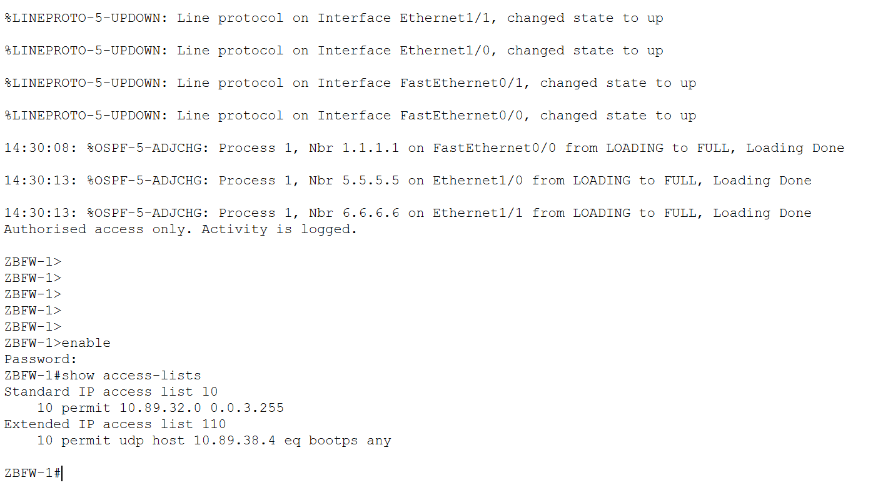
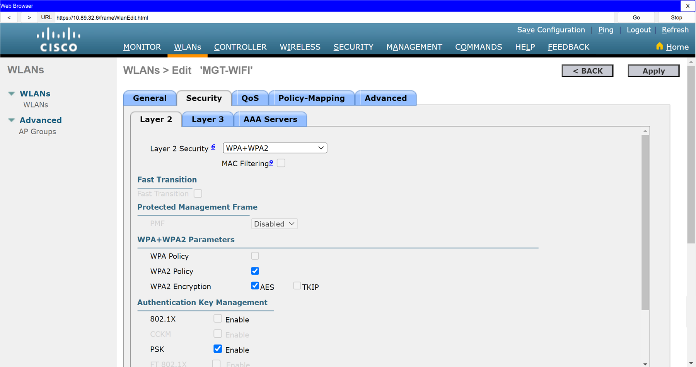
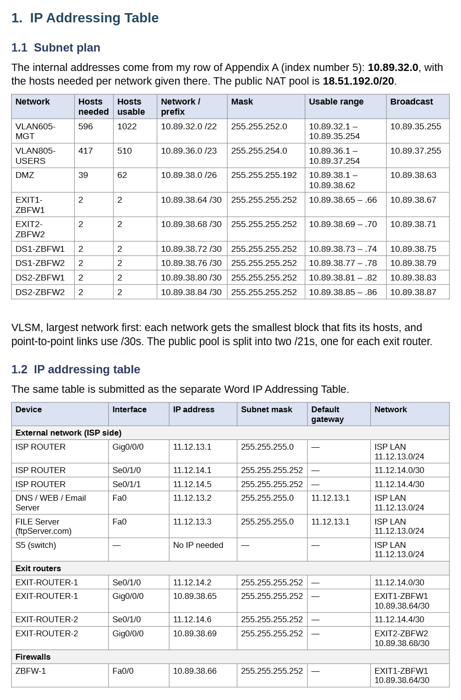

Summary
I built and configured a two-site network in Cisco Packet Tracer: VLANs, a Wireless LAN Controller with lightweight access points, ACLs, OSPF routing, EtherChannel uplinks, HSRP gateway redundancy, a zone-based firewall, and a DMZ server farm with DNS, DHCP and FTP servers. I troubleshot connectivity and configuration faults until all devices communicated as designed, then documented the device configurations and topology diagram for submission.

How I did it
-
Segment the network with VLANs
Configured VLANs on the switches to separate the network into segments: data, wireless, voice, management and users, plus an unused VLAN set aside as the native VLAN.

Proves: VLAN configuration on a switch. -
Restrict traffic with ACLs
Implemented Cisco access control lists on the router (ZBFW-1): a standard ACL for a permitted subnet, and an extended ACL allowing DHCP traffic from a specific host.

Proves: ACL configuration that controls traffic between segments. -
Configure the Wireless LAN Controller
Configured the Wireless LAN Controller through its web interface, including a management WLAN (MGT-WIFI) secured with WPA2, AES encryption and a pre-shared key.

Proves: Wireless LAN Controller configuration. -
Test and troubleshoot
Troubleshot connectivity and configuration faults until all devices communicated as designed. Then I tested the firewall in both directions: the internal management PC can reach the DNS server in the DMZ, but a ping from the DNS server back into the internal network is blocked.

Proves: the firewall lets internal users reach DMZ servers, but stops DMZ servers reaching the internal network.
Result and what I learnt
The finished network was segmented and operated as designed, with device configurations and the topology diagram documented for submission.
This project showed me what it was really testing, and where I stand: what I have understood from class so far, and what I still need to work on. It also pushed me to learn new things quickly and adapt to them, which sharpened my skills.
Evidence
A page from the documentation I submitted: I planned the IP addressing with VLSM (largest network first, smallest block that fits) and recorded every device’s interfaces and addresses.
